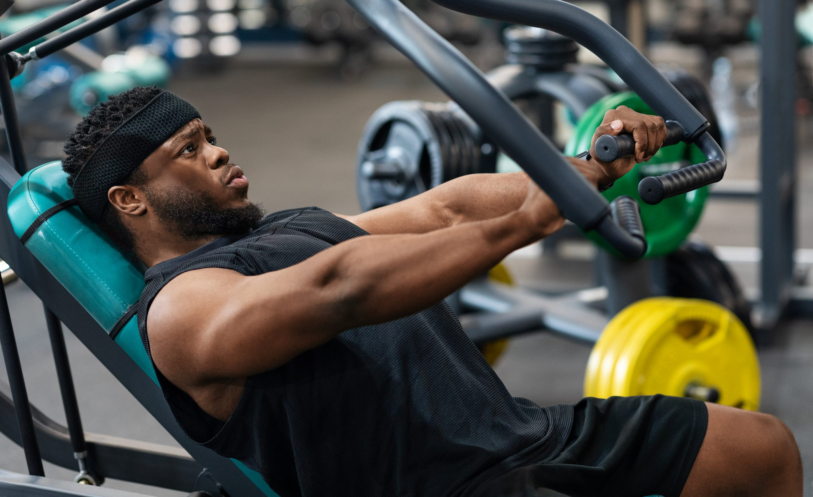

Crossfit
O CrossFit oferece benefícios abrangentes como o aumento rápido da força, resistência muscular, capacidade cardiovascular e alta queima calórica. A modalidade melhora a agilidade, coordenação motora e flexibilidade, além de promover a perda de gordura e tonificação. É uma prática comunitária que aumenta a motivação, autoestima e alivia o estresse. Contamos com professores 100% profissionais e dedicados.

Musculação
A musculação é uma forma de exercício de força que utiliza pesos (livres ou máquinas), elásticos ou o peso do próprio corpo para fortalecer e hipertrofiar os músculos. Oferecemos a melhor estrutura e os melhores equipamentos para o desenvolvimento dos seus treinos

Fit Dance
O FitDance é um programa de dança fitness que mistura coreografias animadas e divertidas com exercícios físicos, focado em ritmos variados, como pop, axé, funk e piseiro. Na Fitness Gym, você além de se exercitar, irá se divertir com as nossas aulas.